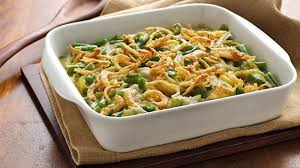

Greenbean_Casserole

Description
322 calories; protein 6.6g; carbohydrates 20.2g; fat 23.2g;
cholesterol 19.8mg; sodium 1068.3mg.
Ingredients
- 2 (14.5 ounce) cans green beans, drained.
- 1 (10.75 ounce) can condensed cream of mushroom soup.
- 1 (6 ounce) can French fried onions.
- 1 cup shredded Cheddar cheese.
Steps
- Preheat oven to 350 degrees F (175 degrees C).
- Place green beans and soup in a large microwave-safe bowl.
- Mix well and heat in the microwave on HIGH until warm (3 to 5 minutes).
- Stir in 1/2 cup of cheese and heat mixture for another 2 to 3 minutes.
- Transfer green bean mixture to a casserole dish and sprinkle with
French fried onions and remaining cheese.
Return to Top
Return Home